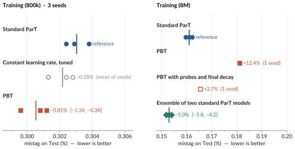
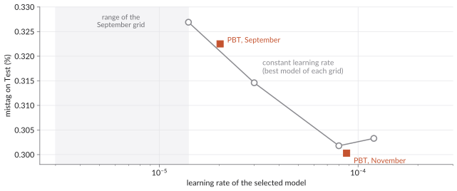
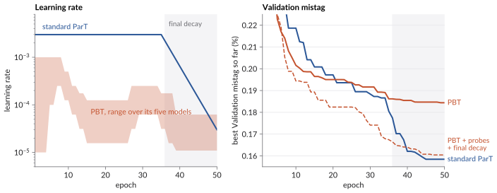

PBT for ParT jet-flavour tagging: report on all trials, July–November 2026
1 Summary
- Objective
- Whether PBT, adapting the LR during fine-tuning of the pretrained ParT, gives a lower mistag than standard ParT training at equal compute (five models, 50 epochs).
- Findings
- The early PBT gains (1.4% at 800k; 7.7% at 8M on Test 9.0M) came from reaching a higher LR: a tuned constant LR matches PBT (#12–#15).Single seed per configuration
- 800k: PBT 0.81% better than standard ParT, 95% interval 0.34–1.34% (#18).Replicated (3 seeds)
- 8M: PBT 12.4% worse than standard ParT; 2.7% worse with probes and final decay (#23–#26).Single seed
- 8M: averaging two standard ParT models is 5.0% better than the better one, interval 4.2–5.8%, at twice the inference cost (#27–#28).Replicated (3 seeds)
- Conclusion
- For this pretrained checkpoint, these PBT variants and 50-epoch fine-tuning: PBT helps by under 1% with Training (800k) and is worse than standard ParT with Training (8M), where an ensemble of two standard ParT models gives the largest gain found.

Samples. “800k” and “8M” name the first 800 thousand and 8 million source entries of each of the three flavour files (b, c, light); after preselection they hold 2,392,232 and 23,921,449 jets (Training (800k) is a subset of Training (8M); from 10 November the 999,999 Validation (1M) rows are removed from Training (8M)). Validation (150k), until 9 November, and Validation (1M) select the model and drive PBT. Test (2.8M), 2,825,125 jets, is evaluated once per selected model; Test (9.0M), 8,970,477 jets, was used only in #10. Mistag: geometric mean of the background mistag rates at b-tag 80/90% (against c, light) and c-tag 50/80% (against b, light).
2 Experiment history
All 33 trials in time order (JST); # = trial number in the experiment log. Results on Test (2.8M) unless marked Validation.

| Date | Configuration | Result | Interpretation |
|---|---|---|---|
| Phase 0 · Set-upTraining (800k). | |||
| Jul 22 – Aug 31 | First PBT versions (exploit-and-mutate, anchor-copy) and LR controllers; older training set-up (samples per epoch capped, damped optimizer start) | Two defects found and fixed: BatchNorm not frozen; a controller overwrote the PBT LR | Not comparable with later trials; training rebuilt as deterministic full epochs (Sep 16) |
| Phase 1 · PBT against constant learning ratesTraining (800k), Validation (150k), seed 12345 unless noted. From here: deterministic full epochs. | |||
| #1Sep 16 | Constant LR, 5 values 3×10−6–1.4×10−5 | 0.3269; best at the highest LR | Reference for PBT. The best model at the edge of the grid was not followed up at the time |
| #2Sep 17–18 | The 1.4 and 0.85×10−5 models of #1 continued to 100 epochs | 0.3156 | Longer training helps |
| #3Sep 18 | PBT: start as #1; every 5 epochs the weakest copies the best, LR ×0.8 or ×1.2, max 3×10−5 | 0.3225; 1.4% better than #1 | Apparent PBT gain (later found to be an LR-level effect, #12–#14) |
| #4Sep 19 | PBT as #3, 100 epochs | 0.3111; 1.4% better than #2 | Same apparent gain at 100 epochs |
| #5Sep 20 | Rule-based LR controller in observe-only mode on a 60k subset of Validation; 8 models, 96 short epochs | Subset ranks models like the full set (Spearman 0.96) but detects an improvement in only 72% of cases; the controller proposed almost no changes | Not pursued |
| #6Sep 23–29 | PBT with decisions every epoch against every 5 epochs; seeds 12345 and 22345 | Every epoch 0.47% and 0.13% worse on Test; better on Validation | Inconclusive: Validation and Test disagree at this level |
| #7Sep 28 | Restart test: one epoch run as five restarted parts | Weights differ (max 7.6×10−4) | Decisions within an epoch impossible: the optimizer (Lookahead) state is not saved |
| #8Oct 12 | First Test (2.8M) evaluation of the selected models of #1–#6 | Test 0.010–0.019 lower than Validation; rank correlation 0.70 | Differences of about 0.3% reorder: Validation (150k) resolves them poorly |
| #9Oct 13 | Training (8M) and Test (9.0M) prepared; one-epoch GPU check | Ready | |
| #10Oct 14–21, Test Nov 2 | Preregistered on Training (8M): constant LR as #1 against PBT as #3; Test (9.0M) opened once | 0.2375 against 0.2572: PBT 7.7% better; all 10 validity checks passed | Best constant model again at the highest LR and PBT above the grid: cannot separate adaptation from LR level |
| #11Oct 17 – Nov 3 | Checkpoints with the full optimizer state, for decisions within an epoch | One epoch = five restarted parts, bit for bit | Implemented; not used in any PBT run |
| Phase 2 · Higher constant learning ratesChanged: constant-LR grid moved upwards; faster PBT. Training (800k), Validation (150k). | |||
| #12Nov 3 | Constant LR 1.4×10−5–3×10−5 | 0.3146; best again at the highest LR | Grid still too low |
| #13Nov 3–4 | Constant LR 3×10−5–8×10−5 | 0.3018; best at 8×10−5 | Better than every PBT run of #3–#6: the early PBT gains came from the LR level |
| #14Nov 4 | Constant LR 8×10−5–3.2×10−4 | 0.3033; best at 1.2×10−4 | Optimum near 8×10−5–1.2×10−4 |
| #15Nov 4 | Fast PBT: start 10−5–3.5×10−4; every 2 epochs from epoch 4, LR ×0.5 or ×2, bounds 5×10−6–5×10−4 | 0.3003; 1.0% better than #14 | PBT about equal to the best constant LR |
| #16Nov 9 | #15 and constant LR 6×10−5–1.6×10−4, seed 22345 | 0.3041 against 0.3027: PBT 0.5% worse, although 1.4% better on Validation | Sign reverses; selection noise (~0.5%) as large as the effect |
| #17Nov 9 | #15 with fallback copies (×0.7 or ×1.4 when ×0.5 and ×2 are both in use) | 0.3026; 0.8% worse than #15 | No improvement |
| Phase 3 · PBT against standard ParT, 800kChanged: Validation (1M); comparator standard ParT; three seeds. | |||
| #18Nov 10–13 | Standard ParT (start 10−5–10−3), constant LR 6×10−5–1.6×10−4 and PBT as #17; seeds 12345, 22345, 32345 | Standard 0.3029 / 0.3038 / 0.3024; constant 0.3028 / 0.3013 / 0.3024; PBT 0.3008 / 0.3012 / 0.2996. PBT 0.81% better (95% interval 0.34–1.34%), at 7 of 8 working points | Small but consistent PBT gain; the constant-LR grid is not stable across seeds |
| #19Nov 12 | PBT as #18 with a final LR decay (no decisions in the last 15 epochs); 2 seeds | Same selected models as #18 | The decay adds nothing at 800k |
| #20Nov 12 | Standard ParT from random weights | 0.378 on Validation, against about 0.30 | Pretraining is essential |
| #21Nov 12 | Weight averages of nearby checkpoints and of PBT models | No gain (Validation) | |
| Phase 4 · PBT against standard ParT, 8MChanged: Training (8M); one seed (12345). | |||
| #22Nov 14–15 | Standard ParT, start 10−5–10−3 | 0.1635; best at the highest start LR (10−3) | Start LR range extended (#24) |
| #23Nov 15–17 | PBT as #18 with the LR range of standard ParT (max 10−3) | 0.1812; 12.4% worse than #24 | PBT lowered all LRs early (at most 2.5×10−4 from epoch 11); hypothesis: two-epoch decision horizon |
| #24Nov 19–20 | Standard ParT, start 3×10−3 (one model, fixed in advance) | 0.1611 | 8M reference |
| #25Nov 19–21 | PBT with cool-down probes: each model judged on a copy trained ¼ epoch at 0.1× its LR; also on 800k | 8M: 0.1699, 5.4% worse than #24. 800k: 0.3024 (no change) | LRs stay higher (1.2×10−4–10−3); gap halved |
| #26Nov 20–23 | Probes plus the final decay of standard ParT; max LR 3×10−3 | 0.1655; 2.7% worse than #24 | 78% of the gap closed; still worse. Extra seeds not run (rule fixed in advance) |
| Phase 5 · Ensembles and other ways to gain, 8MChanged: from the LR schedule to combining models. | |||
| #27Nov 23 | Ensemble: mean class probabilities of #22 and #24; chosen among 8 ensembles on Validation, Test check fixed in advance | 0.1530; 5.05% better than #24 (interval 3.75–6.36%) | Large gain on the development seed |
| #28Nov 23–25 | #27 repeated: new standard ParT runs at 3×10−3 and 10−3, seeds 22345 and 32345 | 0.1519 and 0.1540 against 0.1597 and 0.1623 (3×10−3 models): 4.86% and 5.14% better; mean of 3 seeds 5.01% (interval 4.17–5.84%) | Confirmed on new seeds |
| #29Nov 23 | Ensembles of any two of 15 models of #18 (800k) | No gain beyond chance (Validation) | Models too similar at 800k |
| #30Nov 23–25 | Disagreement and gain of model pairs, all 8M models | Same run or PBT pair: 0.2–0.4% disagreement, no gain; separate models: 1.5–2.3%; same LR 3.6%, different LR 4.7% gain (Validation) | Gain comes mostly from separate training |
| #31Nov 23–24 | Final decay of #24 without dropout | 0.1730 against 0.1595 at epoch 44 (Validation); stopped | Dropout helps at 8M although there is no visible overfitting |
| #32Nov 24 | Distillation: final decay of #24 trained half on labels, half on the ensemble of #27 | Best 0.1600 against 0.1584 (Validation) | No gain; the ensemble gain is not kept in one model |
| #33Nov 24–25 | Standard ParT, start 10−2 | 0.1631 on Validation (worse than #24); 0.1599 on Test | Start LR above 10−3 hardly matters; #24 stays the reference |
3 Interpretation
3.1 The early comparators were too weak Single seed per grid
The mistag falls steeply with the constant LR up to about 10−4, and both PBT runs lie on that curve (Figure 3); the 150k Validation sample did not resolve differences of about 0.5% (#6, #8, #16).

3.2 Training (800k) overfits, Training (8M) does not Single seedHypothesis for the PBT result
The training loss falls below the Validation loss after about 20 epochs at 800k and not at 8M (Figure 4). Hypothesis: an early, well-timed LR reduction helps only when the model overfits, which would explain why PBT gains at 800k and standard ParT, with 35 epochs at a high LR, wins at 8M.

3.3 PBT lowers the LR too early at 8M Single seedHypothesis for the cause
PBT keeps all LRs at or below 2.5×10−4 from epoch 11, leads for about 20 epochs and loses during the final decay of standard ParT (Figure 5). Hypothesis: decisions two epochs after each change favour lower LRs; probes and a final decay (#25, #26) reduce but do not remove this.

3.4 Ensembles need models that disagree Replicated (3 seeds)Hypothesis for the cause
Only separately trained 8M models disagree enough to gain (Figure 6). Hypothesis: PBT models share weights through copying, and at 800k the low LRs keep all models close to the pretrained start. The gain costs a second forward pass at inference and was not kept by distillation (#32).

4 Open questions and scope
- The 8M PBT result and its fixes rest on one seed.
- The causes in 3.2–3.4 are hypotheses; none was tested directly.
- Decision frequency (#6) is inconclusive; decisions within an epoch are implemented (#11) but were never run.
- Scope: one pretrained checkpoint, one optimizer, 50 epochs, the PBT variants listed in section 2. Test (2.8M) was also inspected in diagnostics before November. No result was carried into a physics analysis.